Traitement Automatique du Langage Naturel
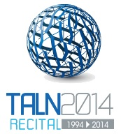
Laboratoire d'Informatique pour la Mécanique et les Sciences de l'Ingénieur
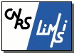
Association Française pour l'Intelligence Artificielle
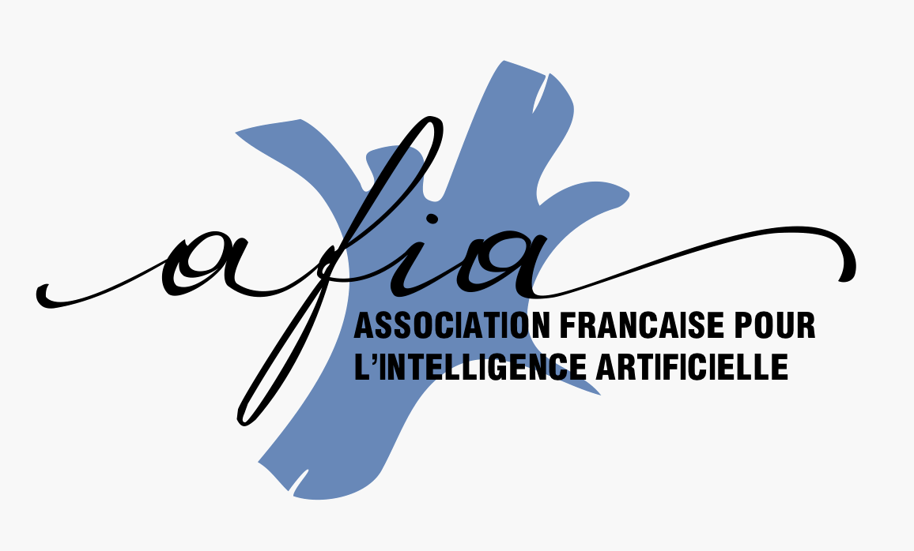
Université de Montréal
L'Agence pour l'évaluation et la distribution des ressources linguistiques
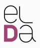
Laboratoire de recherche en informatique de Paris-Sud - CNRS
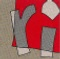
Érudit - plateforme de revues francophones
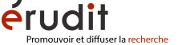
Gallica - Bibliothèque numérique
Association Internationale Francophone d'Extraction et de Gestion des Connaissances
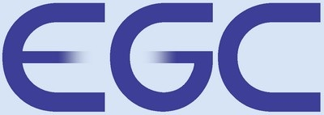
Short Edition
Centre National de Ressources Textuelles et Lexicales
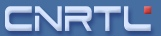
Eureka.cc - Cederom SNi
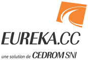
Projet DOXA - Traitement automatique des opinions et des sentiments
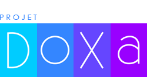
Cap Digital - pôle de la transformation numérique
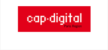
Le Parlement européen
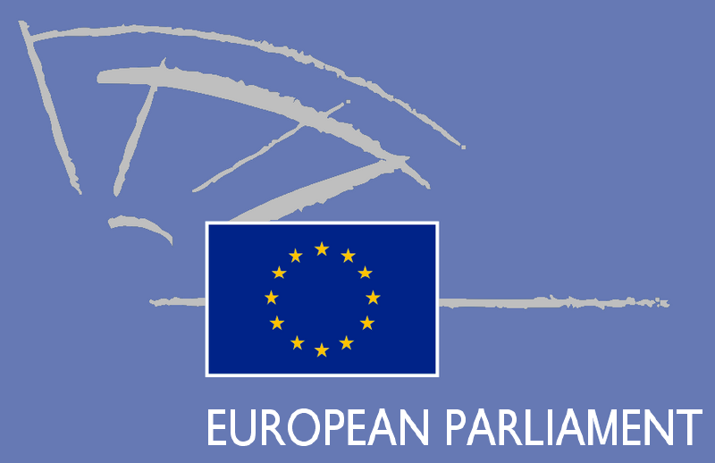
Wikipedia - L’encyclopédie libre
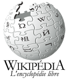
Le monde
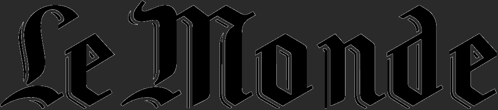
A voir a lire - site de critiques et news films, BD et musique
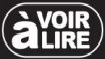
Site du Jeux video
Semaine du document numérique
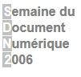
Laboratoire d'Informatique, de Robotique et de Microélectronique de Montpellier
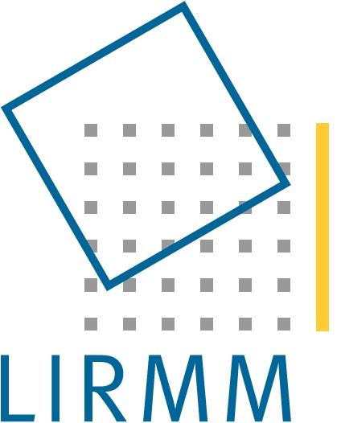